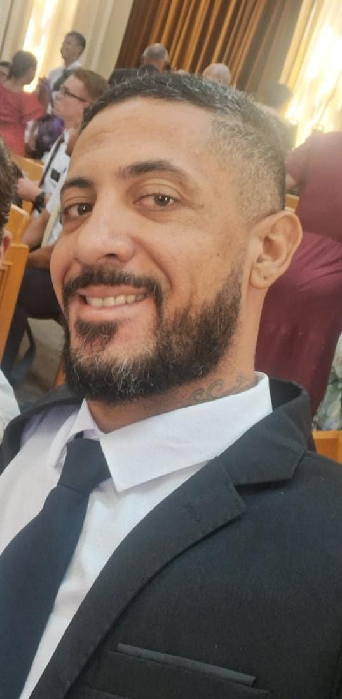

Jose Roberto Bueno | WDD 130

Olá meu nome é Jose Roberto Bueno e sou de Santa Barbara D'Oeste, interior de São Paulo.
Gosto muito de jogar video games e passar o tempo com meus filhos e esposa. Sou casado e Pai de dois filhos.
Tem sido um desafio enorme para mim ingressar pela primeira vez no mundo da tecnologia, pois trabalho em áreas bem diferentes da programação. Atualmente sou um pequeno empreendedor no ramo de lavagens automotivas e também trabalho alguns dias da semana durante à noite em uma pizzaria como Motoboy.
Não tem sido uma tarefa fácil conciliar os dois empregos com os estudos e arrumar tempo suficiente para aprender as Matérias, mas tenho certeza que todo o esforço será recompensado, e o Pai celestial me dará a força necessária para perseverar até o fim!
Estou muito animado com o curso WDD 130 e espero aprender muito com ele. Acredito que a tecnologia é o futuro e quero fazer parte desse mundo.